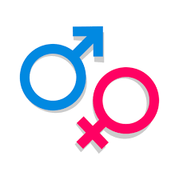

.jfif)
Nationality
Nationality refers to an individual's legal membership or affiliation with a particular nation or country. It is often determined by a person's place of birth, naturalization, or other legal criteria established by a nation's government. Nationality is an important aspect of a person's identity, as it can have various legal, social, and cultural implications, including the rights and responsibilities one has within a specific country. Nationality can affect a person's ability to vote, work, access government services, and travel across international borders, among other things. It is distinct from ethnicity, which is related to a person's cultural and sometimes ancestral background.
.jfif)
Discrimination
Discrimination can manifest in various forms, including: Racial Discrimination: Treating individuals unfairly or unfavorably because of their race or ethnicity. Gender Discrimination: Treating individuals differently based on their gender, which can include discrimination against women (sexism) or against men. Age Discrimination: Treating people unfairly due to their age, often seen in employment decisions or access to services. Religious Discrimination: Unfairly treating individuals because of their religious beliefs or practices. Sexual Orientation Discrimination: Treating people unjustly based on their sexual orientation, such as discrimination against LGBTQ+ individuals. Disability Discrimination: Treating individuals with disabilities unfairly, including physical, mental, or sensory disabilities. Nationality or Citizenship Discrimination: Discrimination based on an individual's nationality or citizenship status. Social Class Discrimination: Treating people differently because of their socioeconomic status. Discrimination can occur in various settings, such as employment, housing, education, healthcare, and in social interactions. It is generally considered unjust, harmful, and a violation of human rights. Laws and regulations exist in many countries to prohibit and address various forms of discrimination and promote equal treatment and opportunities for all individuals.
.jfif)
Ostracism
Ostracism was an athenian democratic procedure in which any citizen could be expelled from the city-state of athens for ten years.

Sex
Refers to biological and physiological characteristics that define
humans as female or male
.png)
Relavism
Is the belief that theres no absolute truth, only the truths that a particular
individual or culture happen to believe.